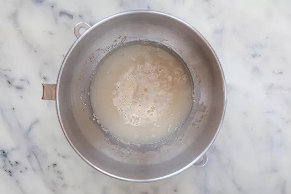

Place the warm water in the large bowl of a heavy duty stand mixer. Sprinkle the yeast over the warm water and let it sit for 5 minutes until the yeast is dissolved.
After 5 minutes stir if the yeast hasn't dissolved completely. The yeast should begin to foam or bloom, indicating that the yeast is still active and alive.
(Note that if you are using "instant yeast" instead of "active yeast", no proofing is required. Just add to the flour in the next step.)
 "'
"'